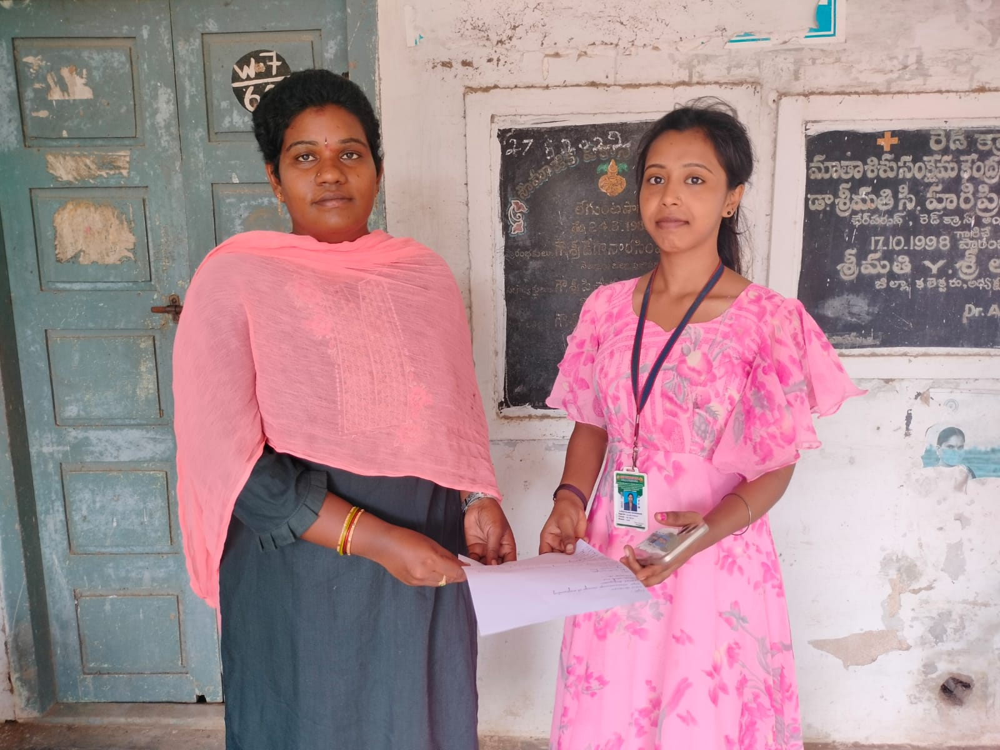
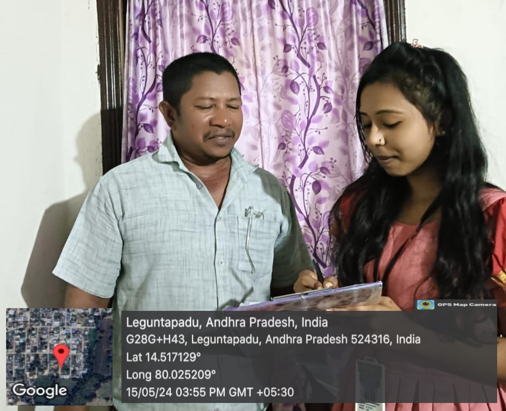

1.Conducted an awareness program on digital transactions at leguntapadu village in Nellore dist in this way i have started my project.
2.Conducted survey in our area to know how well people are aware about digital Transactions.
3.Continued conducting survey in our area to know more about all the digital transactions.
4.Explained the advantages and uses about the digital transactions which are known to me .
5.I planned how to spread awareness and to use some more instructions 3which are not known to the people of our area related to digital transactions.
1.For my personal information I have Visited the bank in our local area of the inamadugu.
2.Continued conducting survey at bank and understood briefly about digital transactions
3.Conducted an awareness program on installation of UPI payment apps
4.Continued the installation of different UPI payment apps in different areas of leguntapadu.
5.Explained about the particular apps Such as PHONE PE,GOOGLE PE,PAYTM,....etc.
6.Continued explaining about the private business paying platforms such as AMAZON PAY and BHARATH PE
1.I Have verified the detailed process of various digital transactions.
2.Visited some various kinds of merchants retail shops and some others
3.Conducted an awareness program on explaining the various types of Digital payments to the local people.
4.Conducted an survey on college students.
5.I helped the farmers in usage of using various methods of digital payments.
6.Studied about the Different methods and types of digital payments.
1.I known about the Importance of Digital Transaction in Cost Saving.
2.Studied about the major challenges faced in digital transactions.
3.Discussed about the major benefits of UPI to Banks& Fintech.
4.Conducted an survey on Mobile Banking.
5.I known about the Barriers to used in Digital Transactions from the local people in our area.
6.Visited many areas and conducted an survey on overall understanding on smart and journey of digital payments.
1.I want to know about the overview of current regulations governing digital payments.
2.I wanted to create awareness about the help centers and payment issues.
3.I have conducted a survey about automatic money debiting from the user account.
4.I have conducted a survey to know about the disadvantages regarding the payment issues.
5.I have conducted a survey on overview of digital transactions that I have learned previously.
6.I wanted to give a conclusion regarding digital transactions.
1.I had created an awareness program on Affecting factors of Digital transactions.
2.Studied about the some of the government initiatives taken by the government.
3.Discussed about the various modes of digital payments.
4.Conducted an awareness program on benefits for government and benefits for people.
5.I known and discussed about the major reasons for failure of digital transactions.
6.On the last day of my community service project I had given conclusion of Digital Transactions what I had been learned in these days.